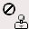
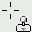
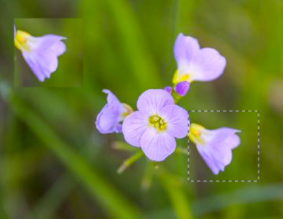
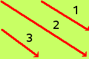

The Clone tool uses the current brush to copy from an image or pattern. It has many uses: one of the most important is to repair problem areas in digital photos, by “painting over” them with pixel data from other areas. This technique takes a while to learn, but in the hands of a skilled user it is very powerful. Another important use is to draw patterned lines or curves: see Patterns for examples.
If you want to clone from an image, instead of a pattern, you must tell
GIMP which image you want to copy from. You do this by holding down the
Ctrl key and clicking in the desired source image.
Until you have set the source in this way, you will not be able to paint
with the Clone tool: the tool cursor tells you this by showing

If you clone from a pattern, the pattern is tiled; that is, when the point you are copying from moves past one of the edges, it jumps to the opposite edge and continues, as though the pattern were repeated side-by-side, indefinitely. When you clone from an image this does not happen: if you go beyond the edges of the source, the Clone tool stops producing any changes.
You can clone from any drawable (that is, any layer, layer mask, or channel) to any other drawable. You can even clone to or from the selection mask, by switching to Quick Mask mode. If this means copying colors that the target does not support (for example, cloning from an RGB layer to an Indexed layer or a layer mask), then the colors will be converted to the closest possible approximations.
There are different possibilities to activate the tool:
-
From the main menu: → → .
-
By clicking the tool icon in the Toolbox.
-
By pressing the C keyboard shortcut.
See the Paint tools key modifiers for a description of key modifiers that have the same effect on all paint tools.
- Ctrl
-
The Ctrl key is used to select the source, if you are cloning from an image: it has no effect if you are cloning from a pattern. You can clone from any layer of any image, by clicking on the image display, with the Ctrl key held down, while the layer is active (as shown in the Layers dialog). If Alignment is set to None, Aligned, or Fixed in tool options, then the point you click on becomes the origin for cloning: the image data at that point will be used when you first begin painting with the Clone tool. In source-selection mode, the cursor changes to a reticle cross symbol

.

Normally, tool options are displayed in a window attached under the Toolbox as soon as you activate a tool. If they are not, you can access them from the main menu through → → which opens the option window of the selected tool.
- Mode, Opacity, Brush, Size, Aspect Ratio, Angle, Spacing, Hardness, Force, Dynamics, Dynamics Options, Apply Jitter, Smooth Stroke, Lock brush to view, Expand Layers
- See the Common Paint Tool Options for a description of tool options that apply to many or all paint tools.
- Source
-
The choice you make here determines whether data will be copied from the pattern shown above, or from one of the images you have open.
- Image
-
If you choose Image source, you must tell GIMP which layer to use as the source, by Ctrl-clicking on it, before you can paint with the tool.
Sample merged: If you enable this option, sampling is not calculated only from the values of the active layer, but from all visible layers.
For more information, see the Glossary entry.

Example image showing the cloned pixels in the upper left corner.

Layers dialog showing the new layer with the cloned pixels.
- Pattern
-
Clicking on the pattern symbol brings up the Patterns dialog, which you can use to select the pattern to paint with. This option is only relevant if you are cloning from a Pattern source.
- Alignment
-
The Alignment mode defines the relation between the brush position and the source position.
In the following examples, we will use a source image where the sample to be cloned will be taken, and a destination image where the sample will be cloned (it could be a layer in the source image)
Figure 14.72. Original images for clone alignment

We will use the largest brush with the Pencil tool. The source is represented here with a ringed cross.

An image with a solid background only. We shall draw three cloning strokes successively.
- None
-
In this mode, each brushstroke is treated separately. For each stroke, the point where you first click is copied from the source origin; there is no relationship between one brush stroke and another. In non-aligned mode, different brush strokes will usually clash if they intersect each other.
Example below: At every new brush stroke, the source goes back to its first position. The same sample is always cloned.
- Aligned
-
In this mode, the first click you make when painting sets the offset between the source origin and the cloned result, and all subsequent brushstrokes use the same offset. Thus, you can use as many brushstrokes as you like, and they will all mesh smoothly with one another.
If you want to change the offset, select a new source origin by clicking with the Ctrl key pressed.
In the example below, at every new brush stroke, the source keeps the same offset it had with the previous brush stroke. So, there is no cloning offset for the first brush stroke. Here, for the following strokes, the source ends up out of the source image canvas; hence the truncated aspect.
- Registered
-
The “Registered” mode is different from the other alignment modes. When you copy from an image, a Ctrl-click will register a source layer. Then painting in a target layer will clone each corresponding pixel (pixel with the same offset) from the source layer. This is useful when you want to clone parts of an image from one layer to another layer within the same image. (But remember that you can also clone from one image to another image.)
At every brush stroke, the source adopts the position of the mouse pointer in the destination layer. In the following example, the destination layer is smaller than the source layer; so, there is no truncated aspect.
- Fixed
-
Using this mode you will paint with the source origin, unlike the modes None or Aligned even when drawing a line. The source will not be moved.
See that the source remains fixed. The same small sample is reproduced identically in a tightened way:
- Hard edge
-
This option gives a hard contour to the cloned area.
- Transparency
-
The effects of the Clone tool on transparency are a bit complicated. You cannot clone transparency: if you try to clone from a transparent source, nothing happens to the target. If you clone from a partially transparent source, the effect is weighted by the opacity of the source. So, assuming 100% opacity and a hard brush:
-
Cloning translucent black onto white produces gray.
-
Cloning translucent black onto black produces black.
-
Cloning translucent white onto white produces white.
-
Cloning translucent white onto black produces gray.
Cloning can never increase transparency, but, unless “keep transparency” is turned on for the layer, it can reduce it. Cloning an opaque area onto a translucent area produces an opaque result; cloning a translucent area onto another translucent area causes an increase in opacity.
-
- “Filter” brushes
-
There are a few non-obvious ways to use the Clone tool to obtain powerful effects. One thing you can do is to create “Filter brushes”, that is, create the effect of applying a filter with a brush. To do this, duplicate the layer you want to work on, and apply the filter to the copy. Then activate the Clone tool, setting Source to “Image source” and Alignment to “Registered”. Ctrl-click on the filtered layer to set it as the source, and paint on the original layer: you will then in effect be painting the filtered image data onto the original layer.
- History brush
-
You can use a similar approach to imitate Photoshop's “History brush”, which allows you to selectively undo or redo changes using a brush. To do this, start by duplicating the image; then, in the original, go back to the desired state in the image's history, either by undoing or by using the Undo History dialog. (This must be done in the original, not the copy, because duplicating an image does not duplicate the Undo history.) Now activate the Clone tool, setting Source to “Image source” and Alignment to “Registered”. Ctrl-click on a layer from one image, and paint on the corresponding layer from the other image. Depending on how you do it, this gives you either an “undo brush” or a “redo brush”.